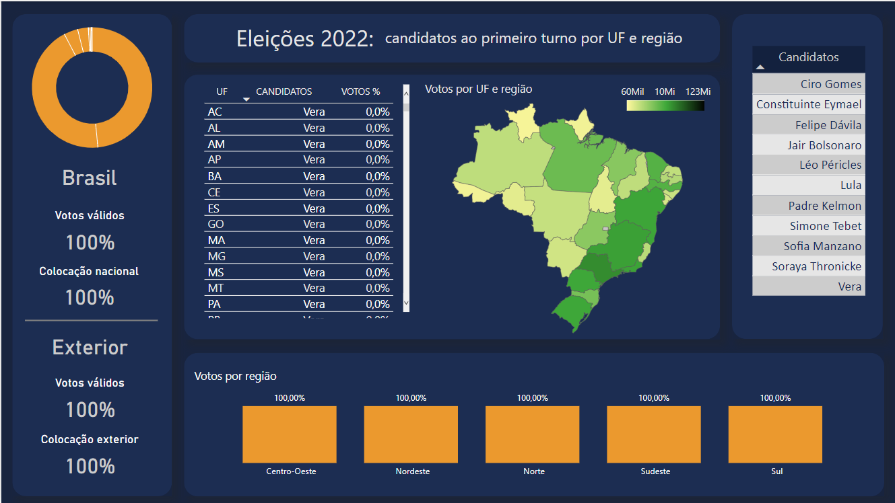
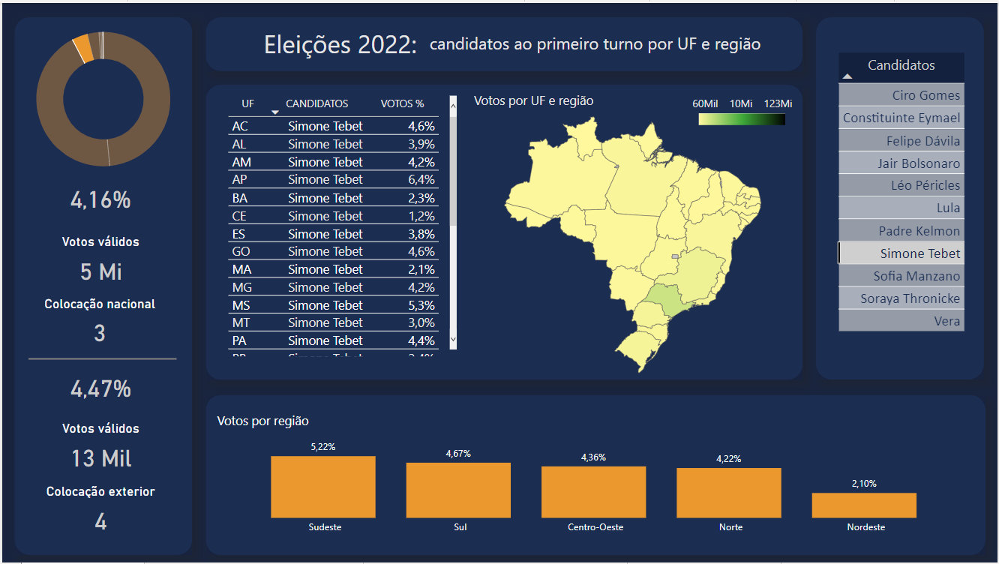
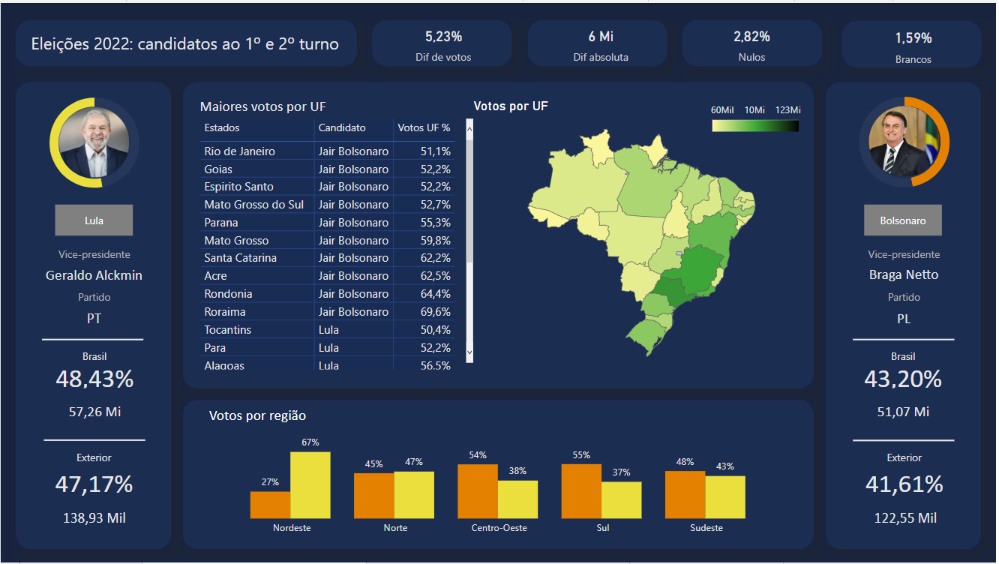
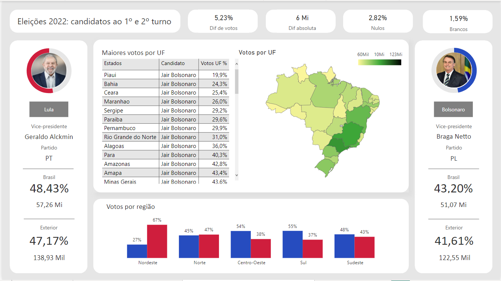

Eleições presidenciáveis de 2022
Motivação
Este foi o primeiro projeto em Power Bi que realizei para fins de estudo sobre análise de dados. A motivação foi poder gerar meu próprio relatório referente as eleições de 2022.
ETL
O projeto se iniciou com a obtenção dos dados fornecidos pelo TSE. Com uma rápida inspeção no site resultados.tse.jus.br foi fácil obter o JSON. Para cada UF, Brasil e exterior havia um JSON diferente. A parte de tratamento exigiu muita atenção, pois a forma que as tabelas e colunas se apresentavam inicialmente não permitia relacionar estados, candidatos, quantidade de votos e afins. Houve limpeza de colunas desnecessárias, tais como hora de encerramento da sessão entre outros. Não haviam linhas em branco, logo, o tratamento de dados incompletos não foi necessário. Foi necessário criar duas novas colunas, uma com o nome completo dos UF pois o mapa de formas não reconhece siglas, e outra coluna de regiões de cada UF.
Modelagem de dados
Foi necessário a criação de IDs em todas as tabelas para haver conexão entre elas. O modelo adotado foi o star schema. A relação foi de *:1. Valores de ID foram ocultados.
Dataviz
Para criar os visuais eu estudei como grandes portais tais como G1 e UOL desenvolveram toda a parte visual dos relatórios. A primeira imagem das eleições foi meu primeiro relatório, ainda tentando compreender como organizar os candidatos e gerar gráficos que fosse fiéis aos resultados da urnas, sem permitir ao usuário um questionamento ou segunda interpretação.
Comprimisso
Análise de dados tem mais a ver com o compromisso de contar a verdade do que de arrastar gráficos e gerar números mágicos. Por isso, toda a exibição de números do projeto do primeiro turno das eleições girou em torno de fazer o usuário compreender a informação como uma verdade, oriunda das urnas eletrônicas, e de modo a compreender curiosidades acerca dos votos, tais como, quais regiões elegeram cada um dos candidatos, informações sobre vice e partido, e diferença de votos entre Brasil e exterior.

Na primeira versão do relatório eu estava experimentando modelos de gráficos e storytelling. Meu maior desafio em DataViz foi sobre como contar uma história sobre eleições. Ainda que muitas das minhas inspirações tenham surgido de grandes portais, eu tinha apenas os recursos que o Power Bi me oferecia, então esse primeiro visual foi um experimento.

Diferente do primeiro visual que havia dois candidatos, neste segundo todos os candidatos do primeiro turno estavam presentes. Eu ampliei minha possibilidade de experimentar, pois nesse momento a proposta, além de envolver política, também envolvia dark mode.
Sobre a política eu fui usando outros recursos do Power Bi, como a versão beta do mapa de formas para haver uma compreensão visual da quantidade de votos por UF e região, como recurso foi usado uma proposta de cor gradiente. Este modelo de relatório está com os valores zerados, por isso ele não é informativo.
Sobre dataviz eu segui uma linha dark mode, pois, apesar de não ser a melhor estratégia para compreensão de dados, principalmente não ser a melhor linha para exibir dados sobre política, muitas vezes é uma linha que devemos seguir já que versões dark podem trazer um menor desconforto durante a leitura, ou mesmo inovar na proposta do design ou da interação com o relatório. As cores foram escolhidas de modo a se desvincular dos partidos, porque do início ao fim a proposta foi analisar dados. As cores de contraste foram o laranja e o verde, que contrastam com o azul marinho. O gradiente do mapa do Brasil foi feito com amarelo em tom pastel, verde escuro e preto.

Neste modelo há um exemplo sobre como o relatório se comporta quando um candidato é selecionado. O gráfico de pizza é meramente visual, sem nenhuma pretensão de transmitir ao leitor a proporção de votos recebidos, os votos recebidos são de função dos cards. O mapa do Brasil ilustra concentração de votos por UF, região e no Brasil, sendo que quanto mais forte a cor do UF, mais votos o candidato recebeu naquele UF ou região. O gráfico de barras ilustra a porcentagem de votos por região.

Este relatório mostra os candidatos que receberam maior votação e que irão concorrer ao segundo turno. O modelo é o mesmo exibido para todos os candidatos ao primeiro turno, pois a proposta é manter a familiaridade do usuário com o ambiente. Nesta proposta um amarelo mais quente foi inserido para contrastar com o azul de fundo e harmonizar com as cores de contraste, sem pesar no visual e que seja diferente das demais cores para que o usuário entenda que cada cor transmite uma informação diferente.

Por fim, este relatório dispensa muitos comentários, pois ele funciona exatamente da mesma forma que o dark, a única diferença aqui é o visual light e a combinação de cores. Nesta proposta foi as cores adotadas foram alinhadas ao partido de cada político, pois era o que melhor conversava com o branco e o cinza.
Em breve irei disponibilizar o link para o pbix